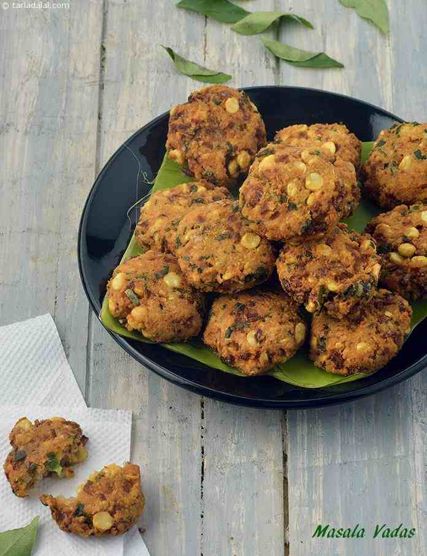

Masala Vada Recipe

Ingredients:
- 1 cup chana dal (split chickpeas)
- 2-3 dried red chilies (adjust to taste)
- 1 small onion, finely chopped
- 2-3 cloves garlic, minced
- 1/2-inch piece of ginger, grated
- 1/4 cup fresh cilantro (coriander leaves), chopped
- 1/4 cup fresh curry leaves, chopped
- 1 teaspoon cumin seeds
- 1/2 teaspoon fennel seeds
- Salt to taste
Instructions:
- Wash and soak the chana dal in water for about 2 hours. Drain well.
- In a blender, add the chana dal, dried red chilies, and blend into a coarse mixture. Do not add water; the mixture should be dry and coarse.
- Transfer the dal mixture to a mixing bowl and add chopped onions, minced garlic, grated ginger, cilantro, curry leaves, cumin seeds, fennel seeds, and salt. Mix everything well.
- Heat oil for deep frying in a pan or kadai.
- Take small portions of the mixture, shape them into flat vadas, and carefully slide them into the hot oil.
- Fry the vadas until they turn golden brown and crispy. Remove them from the oil using a slotted spoon and drain on paper towels.
- Serve hot with coconut chutney and a cup of tea.